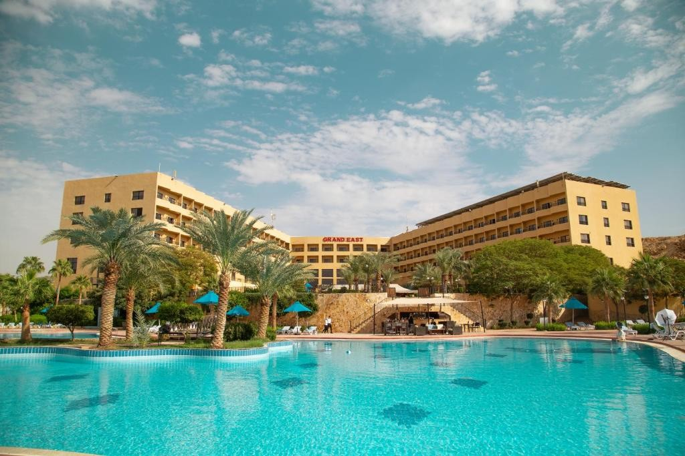
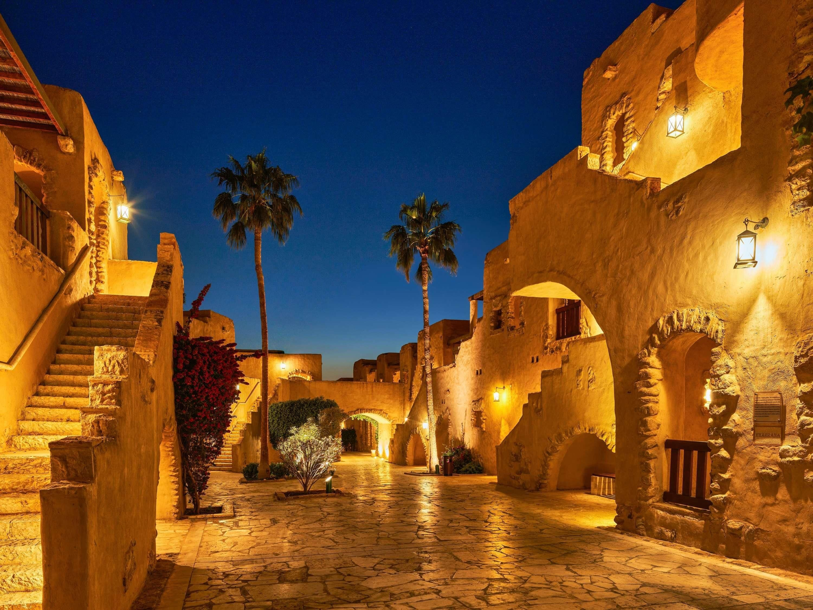
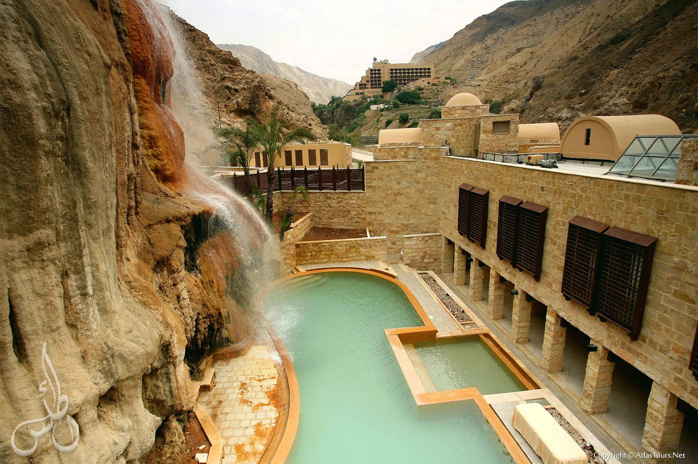

Tour |
HomePage |
Hike
Religious Jordan - Hotels
Stay near Jordan’s sacred sites with hotels that provide comfort and easy access to important religious destinations.



- Grand East Hotel - Dead Sea,A hotel located near the Baptism Site (Bethany Beyond the Jordan), offering easy access for visitors interested in religious tourism.
Tourist Jordan
- Mövenpick Resort & Spa Dead Sea - Dead Sea,A resort close to Mount Nebo and the Baptism Site, ideal for visitors exploring key Christian landmarks in Jordan.
Wikipedia
- Ma'in Hot Springs Resort - Madaba, A peaceful resort located near Mount Nebo, providing a relaxing stay for visitors touring nearby religious and historical sites.
Visit Website |